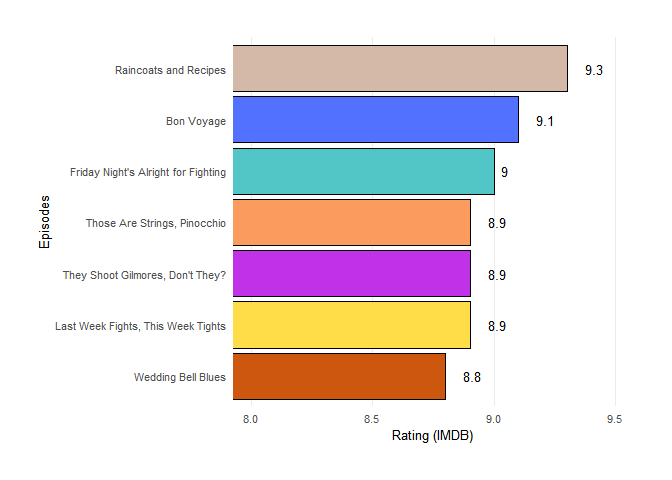

The goal of gilmoregirls is to provide the complete script transcription of the Gilmore Girls (work in progress) and information about the episodes of the TV Show.
Installation
You can install the development version of gilmoregirls from GitHub with:
# install.packages("devtools")
devtools::install_github("lgiselebock/gilmoregirls")Example
The gilmoregirls package comes with one dataset, that contains the informations about all the episodes in the show.
library(gilmoregirls)
dplyr::glimpse(gilmoregirls_info)
#> Rows: 153
#> Columns: 10
#> $ index <int> 1, 2, 3, 4, 5, 6, 7, 8, 9, 10, 11, 12, 13, 14, 15, 1…
#> $ season <int> 1, 1, 1, 1, 1, 1, 1, 1, 1, 1, 1, 1, 1, 1, 1, 1, 1, 1…
#> $ episode <int> 1, 2, 3, 4, 5, 6, 7, 8, 9, 10, 11, 12, 13, 14, 15, 1…
#> $ title <chr> "Pilot", "The Lorelais' First Day at Chilton", "Kill…
#> $ directed_by <chr> "Lesli Linka Glatter", "Arlene Sanford", "Adam Nimoy…
#> $ written_by <chr> "Amy Sherman-Palladino", "Amy Sherman-Palladino", "J…
#> $ air_date <chr> "October 5, 2000 ", "October 12, 2000 ", "October 19…
#> $ us_views_millions <dbl> 5.03, 3.40, 2.89, 3.93, 3.88, 3.73, 3.45, 3.80, 3.62…
#> $ imdb_rating <dbl> 8.1, 8.0, 7.8, 7.9, 7.8, 8.5, 8.4, 8.1, 8.7, 8.3, 7.…
#> $ description <chr> "Rory is accepted into the elite Chilton prep school…Audience (in millions) in the USA
gilmoregirls_info %>%
dplyr::mutate(season = as.factor(season)) %>%
ggplot2::ggplot() +
ggplot2::aes(
x = index,
y = us_views_millions,
fill = season,
width = 0.5
) +
ggplot2::geom_col() +
ggplot2::labs(
x = "Episodes",
y = "Audience (millions) in the USA",
fill = "Season"
) +
ggplot2::scale_x_continuous(breaks = seq(0, 153, 20)) +
ggplot2::scale_y_continuous(
limits = c(0, 8),
breaks = seq(0, 8, 2)
) +
ggplot2::scale_fill_manual(
values = c(
"#d4b9a9",
"#5271ff",
"#52c5c7",
"#c131e8",
"#fc9b5e",
"#ffdd49",
"#cd570f"
)
) +
ggplot2::theme_minimal() +
ggplot2::theme(
panel.grid.major.x = ggplot2::element_blank(),
panel.grid.minor = ggplot2::element_blank(),
legend.position = c(1.06, 1.06),
legend.justification = c("right", "top"),
legend.box.just = "right",
plot.margin = ggplot2::unit(c(1, 1, 1, 1), "cm"),
text = ggplot2::element_text(size = 10)
)
Top 7 episodes with best IMDB ratings
gilmoregirls_info %>%
dplyr::arrange(desc(imdb_rating)) %>%
dplyr::slice_head(n = 7) %>%
ggplot2::ggplot() +
ggplot2::aes(
x = imdb_rating,
y = reorder(title, +imdb_rating)
) +
ggplot2::geom_col(
color = "black",
fill = c(
"#d4b9a9",
"#5271ff",
"#52c5c7",
"#c131e8",
"#fc9b5e",
"#ffdd49",
"#cd570f"
)
) +
ggplot2::geom_text(
ggplot2::aes(
label = imdb_rating,
hjust = -1
),
size = 3.5
) +
ggplot2::labs(
x = "Rating (IMDB)",
y = "Episodes"
) +
ggplot2::coord_cartesian(xlim = c(8, 9.5)) +
ggplot2::scale_x_continuous(breaks = seq(8, 9.5, .5)) +
ggplot2::theme_minimal() +
ggplot2::theme(
panel.grid.minor = ggplot2::element_blank(),
panel.grid.major.y = ggplot2::element_blank(),
plot.margin = ggplot2::unit(c(1, 1, 1, 1), "cm"),
text = ggplot2::element_text(size = 10)
)
Code of Conduct
Please note that the gilmoregirls project is released with a Contributor Code of Conduct. By contributing to this project, you agree to abide by its terms.